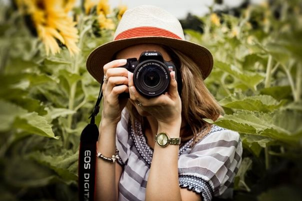
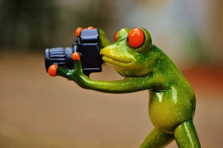

la fotografía está en todas partes y sus opciones y enfoques son muy variados. Por ello, conocer los tipos de fotografías te ayudará a definir tu estilo como fotógrafo y saber qué camino tomar para avanzar en tu carrera profesional. En el post de hoy hablaremos sobre los orígenes y las características de la fotografía, de los tipos que existen y de los distintos géneros fotográficosDe acuerdo a su definición, la fotografía es el procedimiento y arte mediante el cual se fijan y reproducen las imágenes que se recogen en el fondo de una cámara oscura. Como el resto de las profesiones, la fotografía puede clasificarse como actividad profesional, semi-profesional o simplemente de aficionados. A continuación vamos a establecer cuál es la principal diferencia entre la fotografía profesional y la de aficionados.
A lo largo del tiempo la fotografía nos ha acompañado para expresar y conectar con otros, permitiendo trascender cualquier origen, idioma o cultura. Vale la pena preguntarnos ¿Cuál es el valor de una fotografía hoy en día? Hace muchos años tomar una foto implicaba todo un proceso, una fotografía requería de una buena razón, una justificación para que fuera memorable El fotógrafo profesional es aquella persona que lleva años de experiencia dedicándose de manera exclusiva a la fotografía, con lo cual percibe ingresos que le permiten vivir de forma cómoda y haciendo lo que le gusta. Además de conocer en profundidad el mundo de la fotografía, este profesional ya entiende lo que conlleva manejar un negocio de fotografía, está al tanto de los procesos de marketing, venta y demás temas de organización. .
